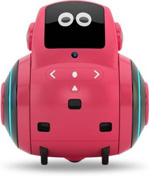

Mental Health
Mental Health is all about your brain. As your brain controls everything in the body, mental health plays a huge part in overall health. Causes of low mental health include addiction to screens, eating bad food, etc. In the 21st century nobody in the world cares about mental health at all and continuously eat junk food, stick to screens. The invention which contributes most to this is the phones with blue light This produces sleeping trouble and addiction. Even tablets and laptops have the same problem.So when your parents tell you to keep the phone down ya better listen!
Products: I have 2 products, I have a robot which tells you about mental health exclusively but also provides you with general knowledge, like current affairs, sports, prizes, space, entertainment and other fields of knowledge. Then there is an app which acts as a store where you can buy my various products. You just have to enter your location in this: Personal Information. My tip-top tip is that you should start eating balanced diets and have control on your screen time.
